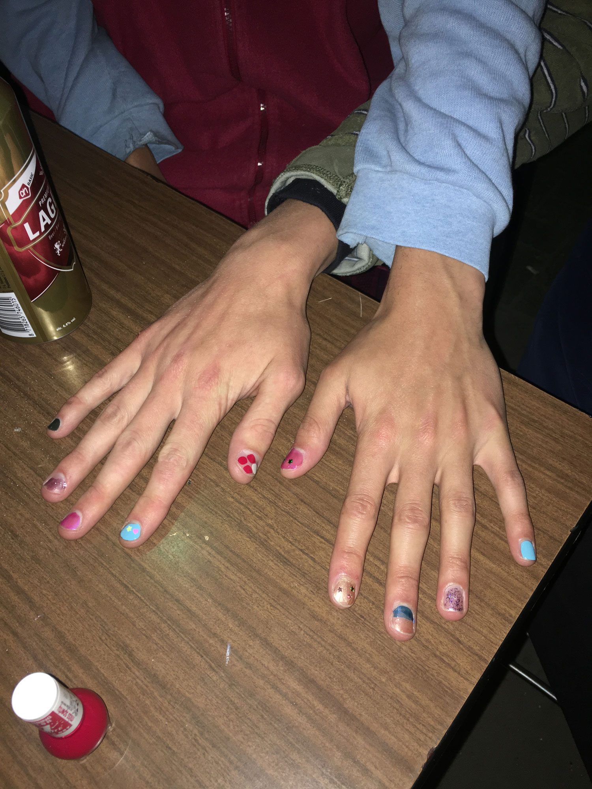
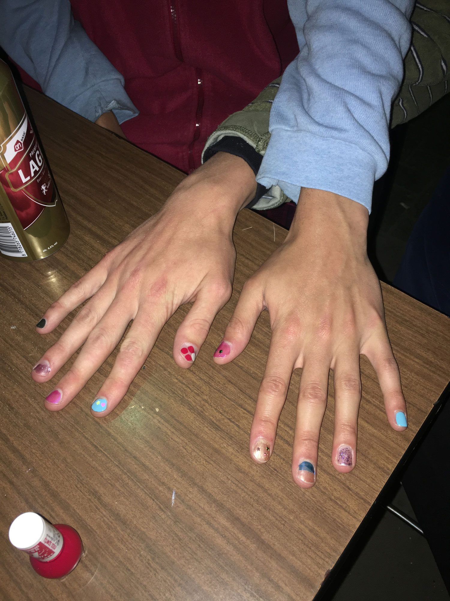

Royal Nail Salon
2019
Royal Nail Salon is an on-going project about giving manicure service as an artistic expression and practice.
It was initiated on 1st April, 2019, when I hosted a half-day manicure workshop in the art academy. All materials are free to use. The only rule is to only paint nails and choose colours for the other person. Being neither a self-service nor a staff-client service, the nail salon workshop aimed to explore the possibilities of interactions happening in a get-together spot.
The idea of Royal Nail Salon is to bring the”non-art”, the “mundane” and “service” to art spaces or the academic context. It is an attempt to break boundaries and to provide a platform for queerness, bodily intimacy, and alternative storytelling.
In 2020, Yusuf and me invented the special service “Tarot and Nails”. We would ask participants to pick 10 cards by their 10 fingers. Yusuf reads the cards and I would paint the nails of the fingers based on my interpretation of the reading. Colours, glitters and patterns have then become metaphorical and esoteric.
framework
-
work developed in the class Image taught by Michel Hoogervorst


 
